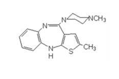
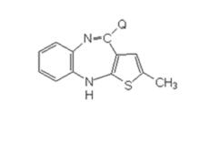
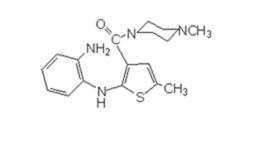
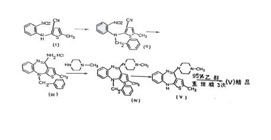
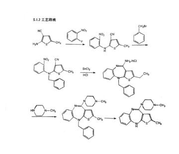

礼来公司诉常州华生制药有限公司侵害发明专利权纠纷案
（最高人民法院审判委员会讨论通过 2017年3月6日发布）
关键词 民事/侵害发明专利权/药品制备方法发明专利/保护范围/技术调查官/被诉侵权药品制备工艺查明
裁判要点
1.药品制备方法专利侵权纠纷中，在无其他相反证据情形下，应当推定被诉侵权药品在药监部门的备案工艺为其实际制备工艺；有证据证明被诉侵权药品备案工艺不真实的，应当充分审查被诉侵权药品的技术来源、生产规程、批生产记录、备案文件等证据，依法确定被诉侵权药品的实际制备工艺。
2.对于被诉侵权药品制备工艺等复杂的技术事实，可以综合运用技术调查官、专家辅助人、司法鉴定以及科技专家咨询等多种途径进行查明。
相关法条
1.《中华人民共和国专利法》（2008年修正）第59条第1款、第61条、第68条第1款（本案适用的是2000年修正的《中华人民共和国专利法》第56条第1款、第57条第2款、第62条第1款）
2.《中华人民共和国民事诉讼法》第78条、79条
基本案情
2013年7月25日，礼来公司（又称伊莱利利公司）向江苏省高级人民法院（以下简称江苏高院）诉称，礼来公司拥有涉案91103346.7号方法发明专利权，涉案专利方法制备的药物奥氮平为新产品。常州华生制药有限公司（以下简称华生公司）使用落入涉案专利权保护范围的制备方法生产药物奥氮平并面向市场销售，侵害了礼来公司的涉案方法发明专利权。为此，礼来公司提起本案诉讼，请求法院判令：1、华生公司赔偿礼来公司经济损失人民币151060000元、礼来公司为制止侵权所支付的调查取证费和其他合理开支人民币28800元；2、华生公司在其网站及《医药经济报》刊登声明，消除因其侵权行为给礼来公司造成的不良影响；3、华生公司承担礼来公司因本案发生的律师费人民币1500000元；4、华生公司承担本案的全部诉讼费用。
江苏高院一审查明：涉案专利为英国利利工业公司1991年4月24日申请的名称为“制备一种噻吩并苯二氮杂化合物的方法”的第91103346.7号中国发明专利申请，授权公告日为1995年2月19日。2011年4月24日涉案专利权期满终止。1998年3月17日，涉案专利的专利权人变更为英国伊莱利利有限公司；2002年2月28日专利权人变更为伊莱利利公司。
涉案专利授权公告的权利要求为：
1.一种制备2-甲基-10-(4-甲基-1-哌嗪基)-4H-噻吩并［2,3,-b］［1,5］苯并二氮杂，或其酸加成盐的方法，

所述方法包括：
(a)使N-甲基哌嗪与下式化合物反应，

式中Q是一个可以脱落的基团，或
(b)使下式的化合物进行闭环反应

2001年7月，中国医学科学院药物研究所（简称医科院药物所）和华生公司向国家药品监督管理局（简称国家药监局）申请奥氮平及其片剂的新药证书。2003年5月9日，医科院药物所和华生公司获得国家药监局颁发的奥氮平原料药和奥氮平片《新药证书》，华生公司获得奥氮平和奥氮平片《药品注册批件》。新药申请资料中《原料药生产工艺的研究资料及文献资料》记载了制备工艺，即加入4-氨基-2-甲基-10-苄基-噻吩并苯并二氮杂，盐酸盐，甲基哌嗪及二甲基甲酰胺搅拌，得粗品，收率94.5%；加入2-甲基-10-苄基-(4-甲基-1-哌嗪基)-4H-噻吩并苯并二氮杂、冰醋酸、盐酸搅拌，然后用氢氧化钠中和后得粗品，收率73.2%；再经过两次精制，总收率为39.1%。从反应式分析，该过程就是以式四化合物与甲基哌嗪反应生成式五化合物，再对式五化合物脱苄基，得式一化合物。2003年8月，华生公司向青岛市第七人民医院推销其生产的“华生-奥氮平”5mg-新型抗精神病药，其产品宣传资料记载，奥氮平片主要成份为奥氮平，其化学名称为2-甲基-10-(4-甲基-1-哌嗪)-4H-噻吩并苯并二氮杂。
在另案审理中，根据江苏高院的委托，2011年8月25日，上海市科技咨询服务中心出具（2010）鉴字第19号《技术鉴定报告书》。该鉴定报告称，按华生公司备案的“原料药生产工艺的研究资料及文献资料”中记载的工艺进行实验操作，不能获得原料药奥氮平。鉴定结论为：华生公司备案资料中记载的生产原料药奥氮平的关键反应步骤缺乏真实性，该备案的生产工艺不可行。
经质证，伊莱利利公司认可该鉴定报告，华生公司对该鉴定报告亦不持异议，但是其坚持认为采取两步法是可以生产出奥氮平的，只是因为有些内容涉及商业秘密没有写入备案资料中，故专家依据备案资料生产不出来。
华生公司认为其未侵害涉案专利权，理由是：2003年至今，华生公司一直使用2008年补充报批的奥氮平备案生产工艺，该备案文件已于2010年9月8日获国家药监局批准，具备可行性。在礼来公司未提供任何证据证明华生公司的生产工艺的情况下，应以华生公司2008年奥氮平备案工艺作为认定侵权与否的比对工艺。
华生公司提交的2010年9月8日国家药监局《药品补充申请批件》中“申请内容”栏为：“（1）改变影响药品质量的生产工艺；（2）修改药品注册标准。”“审批结论”栏为：“经审查，同意本品变更生产工艺并修订质量标准。变更后的生产工艺在不改变原合成路线的基础上，仅对其制备工艺中所用溶剂和试剂进行调整。质量标准所附执行，有效期24个月。”
上述2010年《药品补充申请批件》所附《奥氮平药品补充申请注册资料》中5.1原料药生产工艺的研究资料及文献资料章节中5.1.1说明内容为：“根据我公司奥氮平原料药的实际生产情况，在不改变原来申报生产工艺路线的基础上，对奥氮平的制备工艺过程做了部分调整变更，对工艺进行优化，使奥氮平各中间体的质量得到进一步的提高和保证，其制备过程中的相关杂质得到有效控制。……由于工艺路线没有变更，并且最后一步的结晶溶剂亦没有变更，故化合物的结构及晶型不会改变。”
最高人民法院二审审理过程中，为准确查明本案所涉技术事实，根据民事诉讼法第七十九条、《最高人民法院关于适用〈中华人民共和国民事诉讼法〉的解释》（以下简称《民事诉讼法解释》》）第一百二十二条之规定，对礼来公司的专家辅助人出庭申请予以准许；根据《民事诉讼法解释》第一百一十七条之规定，对华生公司的证人出庭申请予以准许；根据民事诉讼法第七十八条、《民事诉讼法解释》第二百二十七条之规定，通知出具（2014）司鉴定第02号《技术鉴定报告》的江苏省科技咨询中心工作人员出庭；根据《最高人民法院关于知识产权法院技术调查官参与诉讼活动若干问题的暂行规定》第二条、第十条之规定，首次指派技术调查官出庭，就相关技术问题与各方当事人分别询问了专家辅助人、证人及鉴定人。
最高人民法院二审另查明：
1999年10月28日，华生公司与医科院药物所签订《技术合同书》，约定医科院药物所将其研制开发的抗精神分裂药奥氮平及其制剂转让给华生公司，医科院药物所负责完成临床前报批资料并在北京申报临床；验收标准和方法按照新药审批标准，采用领取临床批件和新药证书方式验收；在其他条款中双方对新药证书和生产的报批作出了约定。
医科院药物所1999年10月填报的（京99）药申临字第82号《新药临床研究申请表》中，“制备工艺”栏绘制的反应路线如下：

1999年11月9日，北京市卫生局针对医科院药物所的新药临床研究申请作出《新药研制现场考核报告表》，“现场考核结论”栏记载：“该所具备研制此原料的条件，原始记录、实验资料基本完整，内容真实。”
2001年6月，医科院药物所和华生公司共同向国家药监局提交《新药证书、生产申请表》（（2001）京申产字第019号）。针对该申请，江苏省药监局2001年10月22日作出《新药研制现场考核报告表》，“现场考核结论”栏记载：“经现场考核，样品制备及检验原始记录基本完整，检验仪器条件基本具备，研制单位暂无原料药生产车间，现申请本品的新药证书。”
根据华生公司申请，江苏药监局2009年5月21日发函委托江苏省常州市食品药品监督管理局药品安全监管处对华生公司奥氮平生产现场进行检查和产品抽样，江苏药监局针对该检查和抽样出具了《药品注册生产现场检查报告》（受理号CXHB0800159），其中“检查结果”栏记载：“按照药品注册现场检查的有关要求，2009年7月7日对该品种的生产现场进行了第一次检查，该公司的机构和人员、生产和检验设施能满足该品种的生产要求，原辅材料等可溯源，主要原料均按规定量投料，生产过程按申报的工艺进行。2009年8月25日，按药品注册现场核查的有关要求，检查了70309001、70309002、70309003三批产品的批生产记录、检验记录、原料领用使用、库存情况记录等，已按抽样要求进行了抽样。”“综合评定结论”栏记载：“根据综合评定，现场检查结论为：通过”。
国家药监局2010年9月8日颁发给华生公司的《药品补充申请批件》所附《奥氮平药品补充申请注册资料》中，5.1“原料药生产工艺的研究资料及文献资料”之5.1.2“工艺路线”中绘制的反应路线如下：

2015年3月5日，江苏省科技咨询中心受上海市方达（北京）律师事务所委托出具（2014）司鉴字第02号《技术鉴定报告》，其“鉴定结论”部分记载：“1、华生公司2008年向国家药监局备案的奥氮平制备工艺是可行的。2、对比华生公司2008年向国家药监局备案的奥氮平制备工艺与礼来公司第91103346.7号方法专利，两者起始原料均为仲胺化物，但制备工艺路径不同，具体表现在：（1）反应中产生的关键中间体不同；（2）反应步骤不同：华生公司的是四步法，礼来公司是二步法；（3）反应条件不同：取代反应中，华生公司采用二甲基甲酰胺为溶媒，礼来公司采用二甲基亚砜和甲苯的混合溶剂为溶媒。”
二审庭审中，礼来公司明确其在本案中要求保护涉案专利权利要求1中的方法（a）。
裁判结果
江苏省高级人民法院于2014年10月14日作出（2013）苏民初字第0002号民事判决：1.
常州华生制药有限公司赔偿礼来公司经济损失及为制止侵权支出的合理费用人民币计350万元；2.驳回礼来公司的其他诉讼请求。案件受理费人民币809744元，由礼来公司负担161950元，常州华生制药有限公司负担647794元。礼来公司、常州华生制药有限公司均不服，提起上诉。最高人民法院2016年5月31日作出（2015）民三终字第1号民事判决：1.撤销江苏省高级人民法院（2013）苏民初字第0002号民事判决；2.驳回礼来公司的诉讼请求。一、二审案件受理费各人民币809744元，由礼来公司负担323897元，常州华生制药有限公司负担1295591元。
裁判理由
法院生效裁判认为，《最高人民法院关于审理侵犯专利权纠纷案件应用法律若干问题的解释》第七条规定：“人民法院判定被诉侵权技术方案是否落入专利权的保护范围，应当审查权利人主张的权利要求所记载的全部技术特征。被诉侵权技术方案包含与权利要求记载的全部技术特征相同或者等同的技术特征的，人民法院应当认定其落入专利权的保护范围；被诉侵权技术方案的技术特征与权利要求记载的全部技术特征相比，缺少权利要求记载的一个以上的技术特征，或者有一个以上技术特征不相同也不等同的，人民法院应当认定其没有落入专利权的保护范围。”本案中，华生公司被诉生产销售的药品与涉案专利方法制备的产品相同，均为奥氮平，判定华生公司奥氮平制备工艺是否落入涉案专利权保护范围，涉及以下三个问题：
（一）关于涉案专利权的保护范围
专利法第五十六条第一款规定：“发明或者实用新型专利权的保护范围以其权利要求的内容为准，说明书及附图可以用于解释权利要求。”本案中，礼来公司要求保护涉案专利权利要求1中的方法（a），该权利要求采取开放式的撰写方式，其中仅限定了参加取代反应的三环还原物及N-甲基哌嗪以及发生取代的基团，其保护范围涵盖了所有采用所述三环还原物与N-甲基哌嗪在Q基团处发生取代反应而生成奥氮平的制备方法，无论采用何种反应起始物、溶剂、反应条件，均在其保护范围之内。基于此，判定华生公司奥氮平制备工艺是否落入涉案专利权保护范围，关键在于两个技术方案反应路线的比对，而具体的反应起始物、溶剂、反应条件等均不纳入侵权比对范围，否则会不当限缩涉案专利权的保护范围，损害礼来公司的合法权益。
（二）关于华生公司实际使用的奥氮平制备工艺
专利法第五十七条第二款规定：“专利侵权纠纷涉及新产品制造方法的发明专利的，制造同样产品的单位或者个人应当提供其产品制造方法不同于专利方法的证明。”本案中，双方当事人对奥氮平为专利法中所称的新产品不持异议，华生公司应就其奥氮平制备工艺不同于涉案专利方法承担举证责任。具体而言，华生公司应当提供证据证明其实际使用的奥氮平制备工艺反应路线未落入涉案专利权保护范围，否则，将因其举证不能而承担推定礼来公司侵权指控成立的法律后果。
本案中，华生公司主张其自2003年至今一直使用2008年向国家药监局补充备案工艺生产奥氮平，并提交了其2003年和2008年奥氮平批生产记录（一审补充证据6）、2003年、2007年和2013年生产规程（一审补充证据7）、《药品补充申请批件》（一审补充证据12）等证据证明其实际使用的奥氮平制备工艺。如前所述，本案的侵权判定关键在于两个技术方案反应路线的比对，华生公司2008年补充备案工艺的反应路线可见于其向国家药监局提交的《奥氮平药品补充申请注册资料》，其中5.1“原料药生产工艺的研究资料及文献资料”之5.1.2“工艺路线”图显示该反应路线为：先将“仲胺化物”中的仲氨基用苄基保护起来，制得“苄基化物”（苄基化），再进行闭环反应，生成“苄基取代的噻吩并苯并二氮杂”三环化合物（还原化物）。“还原化物”中的氨基被N-甲基哌嗪取代，生成“缩合物”，然后脱去苄基，制得奥氮平。本院认为，现有在案证据能够形成完整证据链，证明华生公司2003年至涉案专利权到期日期间一直使用其2008年补充备案工艺的反应路线生产奥氮平，主要理由如下：
首先，华生公司2008年向国家药监局提出奥氮平药品补充申请注册，在其提交的《奥氮平药品补充申请注册资料》中，明确记载了其奥氮平制备工艺的反应路线。针对该补充申请，江苏省药监部门于2009年7月7日和8月25日对华生公司进行了生产现场检查和产品抽样，并出具了《药品注册生产现场检查报告》（受理号CXHB0800159），该报告显示华生公司的“生产过程按申报的工艺进行”，三批样品“已按抽样要求进行了抽样”，现场检查结论为“通过”。也就是说，华生公司2008年补充备案工艺经过药监部门的现场检查，具备可行性。基于此，2010年9月8日，国家药监局向华生公司颁发了《药品补充申请批件》，同意华生公司奥氮平“变更生产工艺并修订质量标准”。对于华生公司2008年补充备案工艺的可行性，礼来公司专家辅助人在二审庭审中予以认可，江苏省科技咨询中心出具的（2014）司鉴字第02号《技术鉴定报告》在其鉴定结论部分也认为“华生公司2008年向国家药监局备案的奥氮平制备工艺是可行的”。因此，在无其他相反证据的情形下，应当推定华生公司2008年补充备案工艺即为其取得《药品补充申请批件》后实际使用的奥氮平制备工艺。
其次，一般而言，适用于大规模工业化生产的药品制备工艺步骤繁琐，操作复杂，其形成不可能是一蹴而就的。从研发阶段到实际生产阶段，其长期的技术积累过程通常是在保持基本反应路线稳定的情况下，针对实际生产中发现的缺陷不断优化调整反应条件和操作细节。华生公司的奥氮平制备工艺受让于医科院药物所，双方于1999年10月28日签订了《技术转让合同》。按照合同约定，医科院药物所负责完成临床前报批资料并在北京申报临床。在医科院药物所1999年10月填报的（京99）药申临字第82号《新药临床研究申请表》中，“制备工艺”栏绘制的反应路线显示，其采用了与华生公司2008年补充备案工艺相同的反应路线。针对该新药临床研究申请，北京市卫生局1999年11月9日作出《新药研制现场考核报告表》，确认“原始记录、实验资料基本完整，内容真实。”在此基础上，医科院药物所和华生公司按照《技术转让合同》的约定，共同向国家药监局提交新药证书、生产申请表（（2001）京申产字第019号）。针对该申请，江苏省药监局2001年10月22日作出《新药研制现场考核报告表》，确认“样品制备及检验原始记录基本完整”。通过包括前述考核在内的一系列审查后，2003年5月9日，医科院药物所和华生公司获得国家药监局颁发的奥氮平原料药和奥氮平片《新药证书》。由此可见，华生公司自1999年即拥有了与其2008年补充备案工艺反应路线相同的奥氮平制备工艺，并以此申报新药注册，取得新药证书。因此，华生公司在2008补充备案工艺之前使用反应路线完全不同的其他制备工艺生产奥氮平的可能性不大。
最后，国家药监局2010年9月8日向华生公司颁发的《药品补充申请批件》“审批结论”栏记载：“变更后的生产工艺在不改变原合成路线的基础上，仅对其制备工艺中所用溶剂和试剂进行调整”，即国家药监局确认华生公司2008年补充备案工艺与其之前的制备工艺反应路线相同。华生公司在一审中提交了其2003、2007和2013年的生产规程，2003、2008年的奥氮平批生产记录，华生公司主张上述证据涉及其商业秘密，一审法院组织双方当事人进行了不公开质证，确认其真实性和关联性。本院经审查，华生公司2003、2008年的奥氮平批生产记录是分别依据2003、2007年的生产规程进行实际生产所作的记录，上述生产规程和批生产记录均表明华生公司奥氮平制备工艺的基本反应路线与其2008年补充备案工艺的反应路线相同，只是在保持该基本反应路线不变的基础上对反应条件、溶剂等生产细节进行调整，不断优化，这样的技术积累过程是符合实际生产规律的。
综上，本院认为，华生公司2008年补充备案工艺真实可行，2003年至涉案专利权到期日期间华生公司一直使用2008年补充备案工艺的反应路线生产奥氮平。
（三）关于礼来公司的侵权指控是否成立
对比华生公司奥氮平制备工艺的反应路线和涉案方法专利，二者的区别在于反应步骤不同，关键中间体不同。具体而言，华生公司奥氮平制备工艺使用的三环还原物的胺基是被苄基保护的，由此在取代反应之前必然存在苄基化反应步骤以生成苄基化的三环还原物，相应的在取代反应后也必然存在脱苄基反应步骤以获得奥氮平。而涉案专利的反应路线中并未对三环还原物中的胺基进行苄基保护，从而不存在相应的苄基化反应步骤和脱除苄基的反应步骤。
《最高人民法院关于审理专利纠纷案件适用法律问题的若干规定》第十七条第二款规定：“等同特征，是指与所记载的技术特征以基本相同的手段，实现基本相同的功能，达到基本相同的效果，并且本领域普通技术人员在被诉侵权行为发生时无需经过创造性劳动就能够联想到的特征。”本案中，就华生公司奥氮平制备工艺的反应路线和涉案方法专利的区别而言，首先，苄基保护的三环还原物中间体与未加苄基保护的三环还原物中间体为不同的化合物，两者在化学反应特性上存在差异，即在未加苄基保护的三环还原物中间体上，可脱落的Q基团和胺基均可与N-甲基哌嗪发生反应，而苄基保护的三环还原物中间体由于其中的胺基被苄基保护，无法与N-甲基哌嗪发生不期望的取代反应，取代反应只能发生在Q基团处；相应地，涉案专利的方法中不存在取代反应前后的加苄基和脱苄基反应步骤。因此，两个技术方案在反应中间物和反应步骤上的差异较大。其次，由于增加了加苄基和脱苄基步骤，华生公司的奥氮平制备工艺在终产物收率方面会有所减损，而涉案专利由于不存在加苄基保护步骤和脱苄基步骤，收率不会因此而下降。故两个技术方案的技术效果如收率高低等方面存在较大差异。最后，尽管对所述三环还原物中的胺基进行苄基保护以减少副反应是化学合成领域的公知常识，但是这种改变是实质性的，加苄基保护的三环还原物中间体的反应特性发生了改变，增加反应步骤也使收率下降。而且加苄基保护为公知常识仅说明华生公司的奥氮平制备工艺相对于涉案专利方法改进有限，但并不意味着两者所采用的技术手段是基本相同的。
综上，华生公司的奥氮平制备工艺在三环还原物中间体是否为苄基化中间体以及由此增加的苄基化反应步骤和脱苄基步骤方面，与涉案专利方法是不同的，相应的技术特征也不属于基本相同的技术手段，达到的技术效果存在较大差异，未构成等同特征。因此，华生公司奥氮平制备工艺未落入涉案专利权保护范围。
综上所述，华生公司奥氮平制备工艺未落入礼来公司所有的涉案专利权的保护范围，一审判决认定事实和适用法律存在错误，依法予以纠正。
（生效裁判审判人员：周翔（民三庭审判员）、吴蓉、宋淑华）